Scene 1Warm-Up
▶ Start hereHow your Wonder Films lessons work1-minute videoOpen ▾
🎯 TodayI can…
- explain how a plant's traits help it survive in its environment.
- compare plant traits across different environments and explain which gives an advantage.
- use evidence to explain why a trait helps a plant survive and reproduce in one place but not another.

🔎 Mystery specimenWhat can one plant show you?
What to do: Press Inspect specimen. Move the magnifying lens over the plant, then tap 3 things you notice.
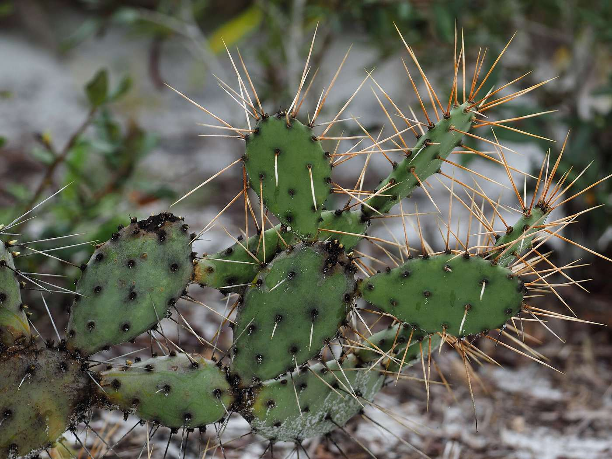
📚 Word WallWords scientists use
What to do: Tap or click each card to flip it and read what the word means. Tap 🔊 to hear the word.
Scene 2The Lesson
🌱 Part 1Traits Help Plants Survive
Every plant has traits: features like leaf shape, root depth, or stem thickness. Some traits help a plant get water. Others help it catch sunlight, stay safe, or make seeds.
When a trait helps a plant survive in its environment, scientists call it an adaptation. A plant with a useful adaptation has an advantage over other plants.
🎞️ Put the scenes in orderHow does a saguaro drink a storm?
What to do: Drag each photo into the film strip, from first to last. You can also tap a photo, then tap a frame. Get the order right and your strip becomes a movie.
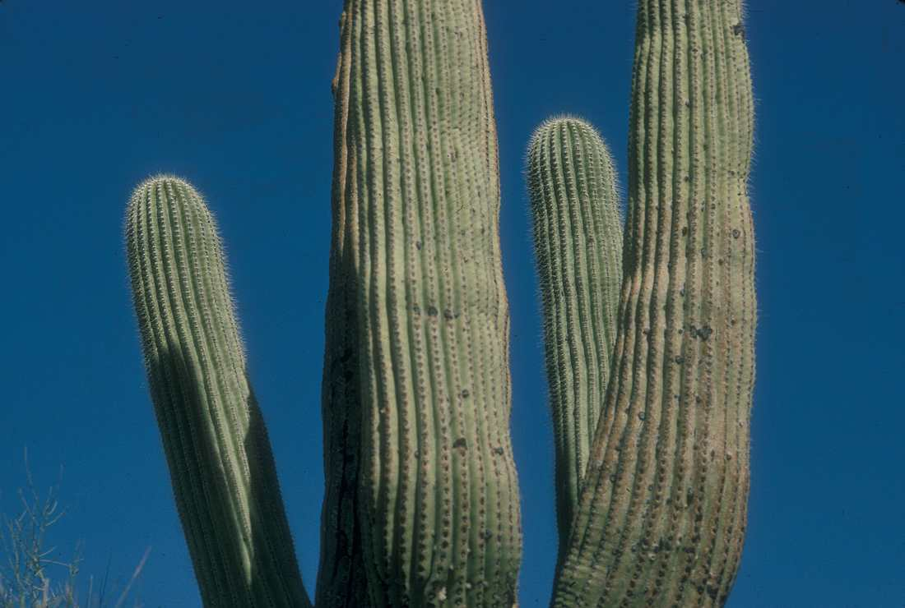
Look at scene 4 again. Would a saguaro do well in a flooded swamp?
🌵 Part 2Desert Plants vs. Rainforest Plants
Desert plants live with very little water. A cactus stores water in its thick, waxy stem. Its spines are really leaves with a new shape. They lose almost no water, and they keep animals away.
In a rainforest, rain falls almost every day. Many leaves are wide, to catch light in the shade. Some end in a pointed drip tip. Scientists think drip tips help leaves dry fast, so moss and mold don't grow on them. A trait that helps in one place may hurt in another.
☀️ The Sun Lamp LabWhich shape saves water?
What to do: Follow the steps one at a time. You will pick, test, and then explain.
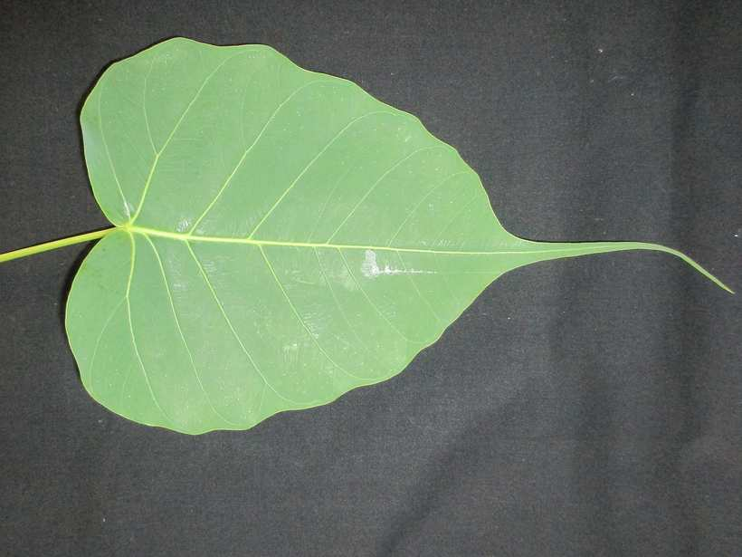
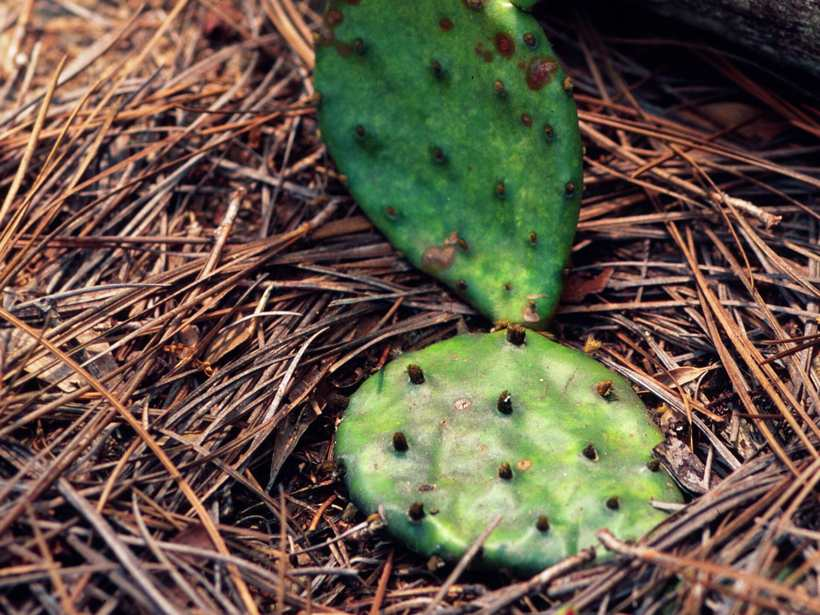
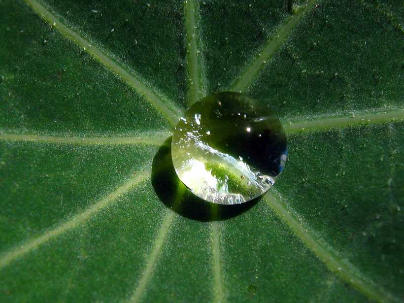
🪴 Part 3Root Systems and Reproduction
The root system is an adaptation too. Desert cactuses have shallow roots that spread wide to catch rain fast. Many grassland plants have deep roots that live through dry weather and fire. Wetland plants have spongy roots that can grow in flooded soil.
Plants also need to reproduce. A plant that lives long enough to make seeds passes its helpful traits on. Over time, the plants with the best traits for a place are the ones that keep growing there.
🧭 The Florida walkWalk down from a dry ridge to the sea
What to do: First, make a prediction. Then brush the glowing layer: drag across it (or tap it again and again) until the plant shows.
As the land gets lower and wetter, will the plants' traits stay the same, or change?
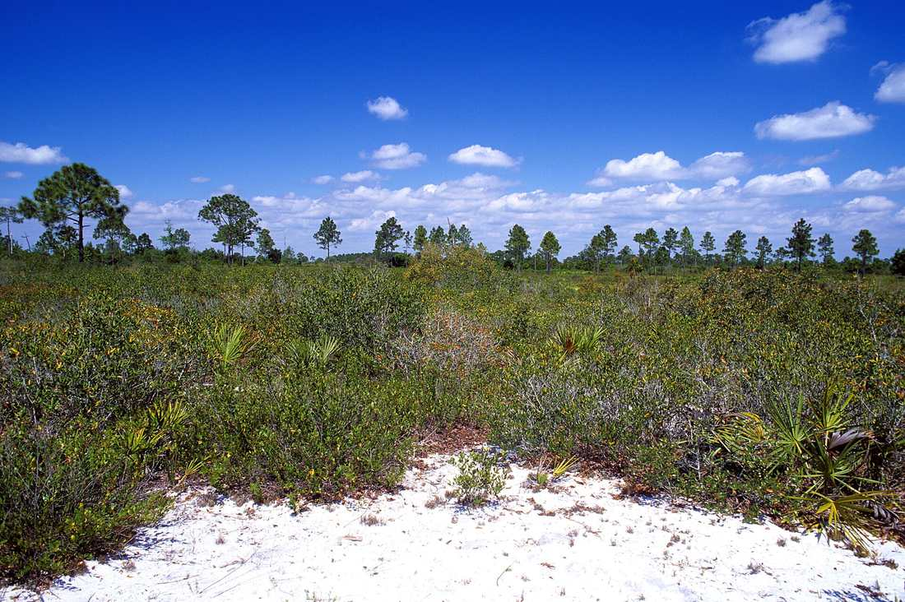
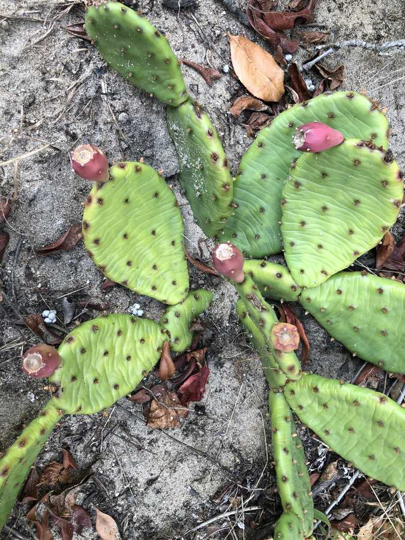
Stop 1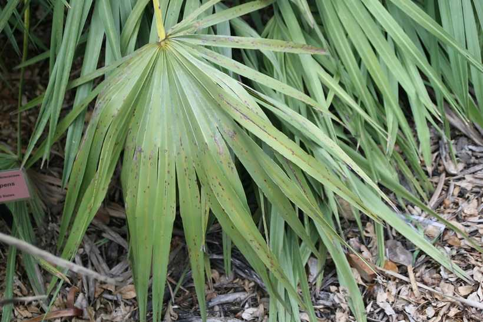
Stop 2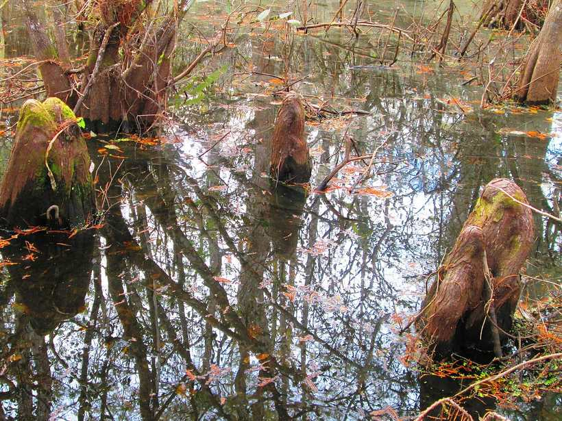
Stop 3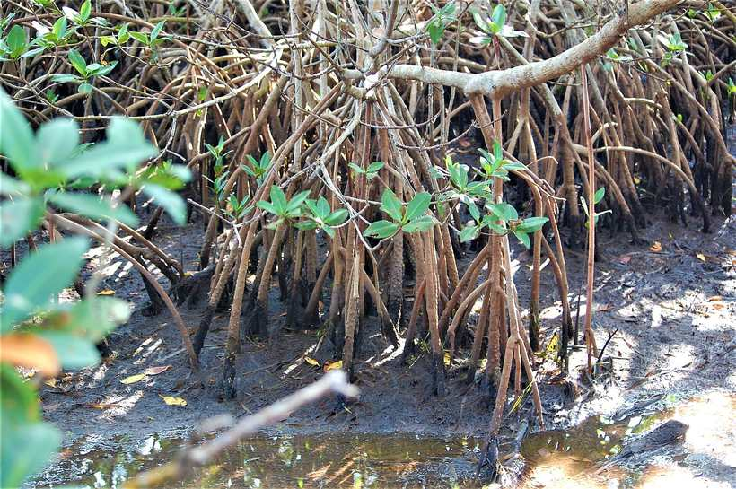
Stop 4On the Florida walk, the environment changed, and so did the plants' traits. Each plant has traits that fit the soil and water where it grows.
The prickly pear (Stop 1) and the red mangrove (Stop 4) both grow in Florida. Could they trade places and still do well?
The fern that comes back to life
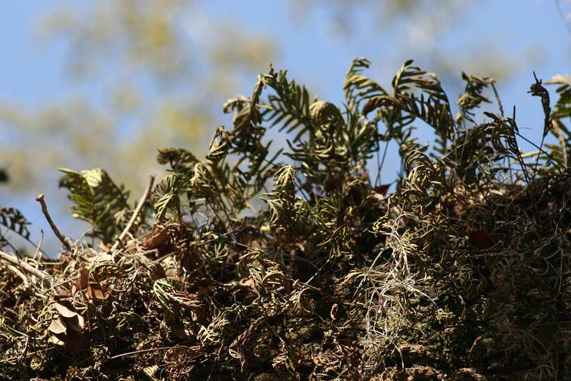
This fern grows on the branches of live oak trees all over Florida. In a dry spell, it curls up and turns brown. It looks dead!
Scientists say it can lose almost all of its water and still live. After a good rain, it can turn green again in about a day. It even flew into space on the space shuttle in 1997.
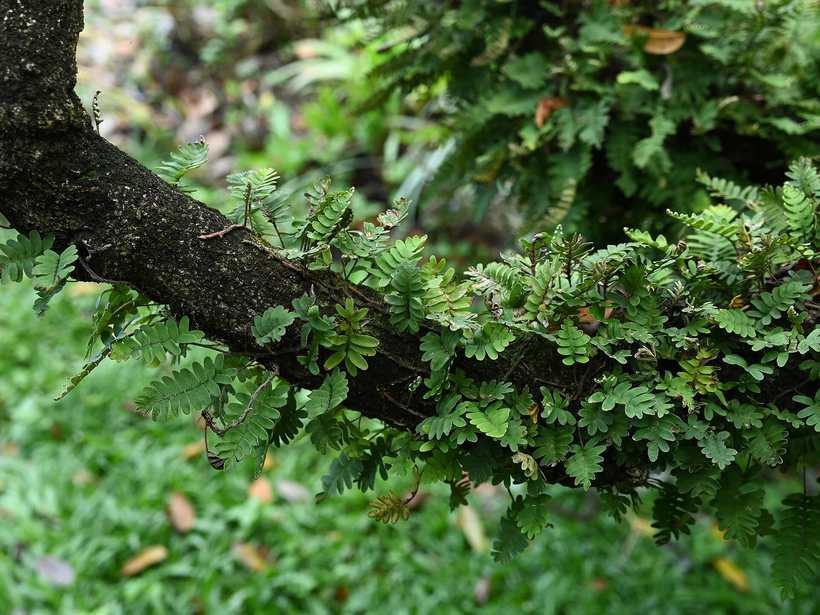
🗂️ Part 4Plant Trait Detective
What to do: Pick 3 cards, one at a time. Tap a clue you see, then pick what it is. Predict where it grows, and watch its home appear.
| Plant | What I observe | The trait | Its home | My evidence |
|---|
🌍 Rebuild the plant's homeUse your evidence to rebuild the plant's home OPTIONALOpen ▾
What to do: Pick one you solved. Pick the place it points to, then pick the living things that belong there.
Pick one from your chart and explain it.
Start with: "Plant __ has…"
Scene 3Self-Check
What does an adaptation do for a plant?
A cactus has spines instead of wide leaves. Why is this an advantage in a desert?
A plant has spongy roots that can grow in flooded soil. Where would this trait give it the biggest advantage?
Scene 4Assignment
🔍 Part AMatch the trait
What to do: Read each one. Pick the best answer, or type your answer.
1. Thick, waxy stem that stores water. Which environment does it fit?
2. Wide, waxy leaves with pointed drip-tip ends. Which environment does it fit?
3. Spongy roots that grow in waterlogged (soaked) soil. Which environment does it fit?
4. Shallow roots that spread wide near the soil surface. Which environment does it fit?
5. Pick one of the four traits above. Tell why it helps the plant in that environment.
🚀 Part BShort answer
What to do: Answer in complete sentences. Use your science words.
1. What is an adaptation? Give one example and explain why it helps that plant survive.
2. A cactus is moved to a rainforest. Predict what might happen there, and explain your reasoning.
✍️ Write and explainWalk through your thinking
What to do: Pick one from your evidence chart. Answer the three questions. Use at least one of the science words under the boxes.
Start with: "I think the [plant name] survives in the [environment] because…"
Start with: "I know this because the lesson showed that…"
Start with: "This makes sense because…"
🎨 Part CDraw and label
What to do: Draw a plant in its environment. Label 2 of its traits. For each label, tell what the trait does for the plant.
🎬 Your question from Scene 1Can you answer it now?
What do you still wonder about? Write your question here. Then answer it.
📋 My answersEverything you wrote, in one place
(Your answers show up here as you write.)
How to turn in: Copy your answers and paste them into the Canvas assignment. Or download the file and upload it. Then press Save my drawing in Part C and upload your drawing too.
✅ Checklist
What to do: Tap each item when it is done. Items you finish on the page check themselves.
- My evidence chart has 3 plants and my explanation.
- Part A: all five answers.
- Part B: questions 1 and 2.
- Part C: my drawing and both labels.
- Write and explain, with at least one science word.
🎬 Premiere my plant storyYour exhibit
What to do: Check your exhibit. Pick the one you wrote about, add your first name, then press Premiere film.
I observed…
I think it was…
My evidence…
It tells us…
🎞️ This film's frames
Water stored
The Sun Lamp Lab
The Florida walk
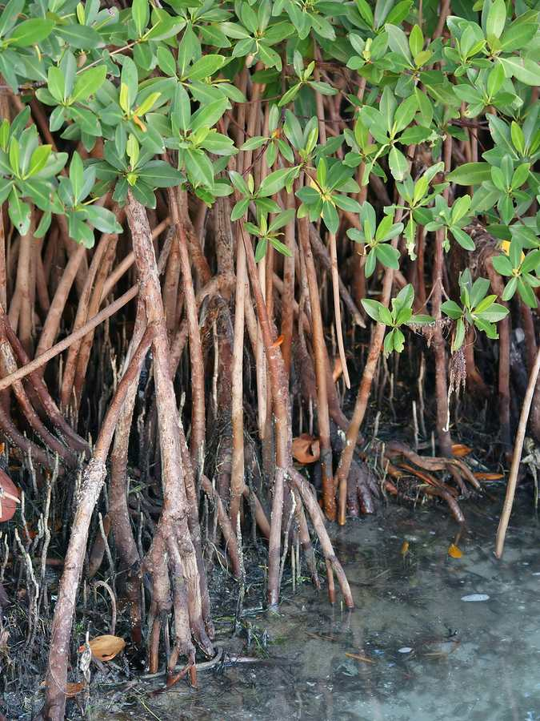
Plant detectives
Earn all four frames in the Lesson, then finish the checklist.
🔜 Coming up next18.02 · Investigation: Compare Plant Adaptations
Next time, you'll compare plants from a shady forest and an open grassland, and figure out which traits help in each.
Photo and music credits
- Mangrove Forest NPS Photo Glenn Gardner (28470827128), evergladesnps, Public domain
- Andropogon gerardii (20914954508), Matt Lavin from Bozeman, Montana, USA, CC BY-SA 2.0
- BCBG Ficus Religiosa Leaf Detail, Craig Franklin, CC BY-SA 3.0 au
- Nymphaea odorata (9250064874), Everglades National Park (NPS), Public domain
- Rhizophora mangle (prop roots), Hans Hillewaert, CC BY-SA 3.0
- Carnegiea gigantea in Saguaro National Park near Tucson, Arizona during Novem…, WClarke, CC BY-SA 3.0
- Carnegiea gigantea - treegrow (1), Katja Schulz from Washington, D. C., USA, CC BY 2.0
- Dew on nasturtium leaf, Elucidate, CC BY 3.0
- Saguaro National Park NPS photo (23631135983), naturenps, Public domain
- Pine flatwoods 001 by Scott Zona, scott.zona, CC BY 2.0
- Sawgrass Prairie NPS Photo G Gardner (42295786392), evergladesnps, Public domain
- Andropogon gerardii (20480291364), Matt Lavin from Bozeman, Montana, USA, CC BY-SA 2.0
- Leaf 1 web, Jon Sullivan, Public domain
- Flowers (20120105-OC-AMW-0519), USDAgov, Public domain
- Starr 070404-6629 Rhizophora mangle, Forest & Kim Starr, CC BY 3.0
- Carnegiea gigantea in Saguaro National Park near Tucson, Arizona during Novem…, WClarke, CC BY-SA 3.0
- Ficus religiosa Arayaal 1, Monalperoth, CC BY-SA 4.0
- Con00028, NOAA Photo Library, Public domain
- Red Mangrove Sunset CVC, NPS Photo, B.Call (9101776772), Everglades National Park (NPS), Public domain
- Devil's Tongue Prickly Pear Cactus - Opuntia austrina, Lake June-in-Winter Sc…, Judy Gallagher, CC BY 2.0
- Opuntia humifusa1UGA1120625, Ted Bodner, Southern Weed Science Society, United States, CC BY 3.0 us
- Saguaro (130) (50619253637), SaguaroNPS, Public domain
- Sunset falls across the beautiful Flint Hills (f0f6c731-1dd8-b71b-0b88-d32612…, NPS, Public domain
- Rain (50615708966), SaguaroNPS, Public domain
- Peru - Salkantay Trek 131 - catching the rain (7157991823), McKay Savage from London, UK, CC BY 2.0
- Pleopeltis polypodioides Cumberland Island 2, a.dombrowski, CC BY-SA 2.0
- Pleopeltis polypodioides kz05, Krzysztof Ziarnek, Kenraiz, CC BY-SA 4.0
- Rainforest Canopy El Yunque National Forest, EgorovaSvetlana, CC BY-SA 4.0
- Ancient florida scrub lwr, Bill Lea, Public domain
- Ceratiola ericoides - Lake Wales Ridge rosemary scrub - Archbold, Dsandii, CC BY-SA 4.0
- WEA glades storm 1282, NPSPhoto, Haugen, Oct 64 (9257940384), Everglades National Park (NPS), Public domain
- Big Cypress National Preserve BICY1060, National Park Service Digital Image Archives, Public domain
- Corkscrew - bald cypress knees, Beyond My Ken, CC BY-SA 4.0
- Red Mangroves at Ding Darling National Wildlife Refuge (53604220515), U.S. Fish and Wildlife Service Headquarters, Public domain
- Serenoa repens 18zz, Photo by David J. Stang, CC BY-SA 4.0
- Opuntia humifusa 231333283, Sus scrofa, CC BY 4.0
- Flora El Yunque National Forest Puerto Rico, EgorovaSvetlana, CC BY-SA 4.0
- Music: Beethoven, Symphony No. 6 (Pastoral), 4th movement (the storm), Musopen, public domain (Wikimedia Commons).
- Opti the owl: Optima Academy. Sound effects are made by the page. The Florida walk is a model; every plant photo is real.